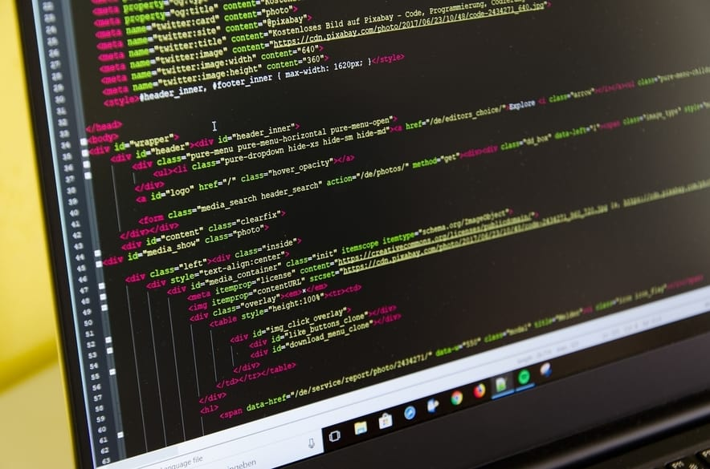

Responsabilidade Social
8, Dezembro, 2021
O tema de responsabilidade social diz respeito ao cumprimento dos deveres e obrigações dos indivíduos e empresas com a sociedade em geral.
T.I Verde
10, Dezembro, 2021
T.I verde é uma prática que está se tornando cada vez mais comum nos ambientes de tecnologia de informação. Onde nota-se uma preocupação na sustentabilidade ambiental.
Resíduos no Desenvolvimento de Tecnologia
20, Dezembro, 2021
Este artigo trata sobre a produção de resíduos que é criada durante o desenvolvimento de tecnologia no mundo atual.
Inclusão Social em T.I
22, Dezembro, 2021

Este é um tópico de extrema relevância hodiernamente, onde discute-se a importância de incluir indivíduos com as mais diferentes características no meio de tecnologia da informação.
Educação Inclusiva
25, Dezembro, 2021
Educação inclusiva é um tema muito importante e que deve-se ser discutido, este artigo busca trazer mais informações para o leitor a respeito.
Programação Básica em Python I
01, Setembro, 2021
Neste artigo o leitor será apresentado aos conceitos básicos de algoritmos e estrutura de dados em Python.
Programação Básica em Python II
01, Janeiro, 2022
Continuação do primeiro artigo. Aqui, o leitor será introduzido aos algoritmos e estrutura de dados, em Python.